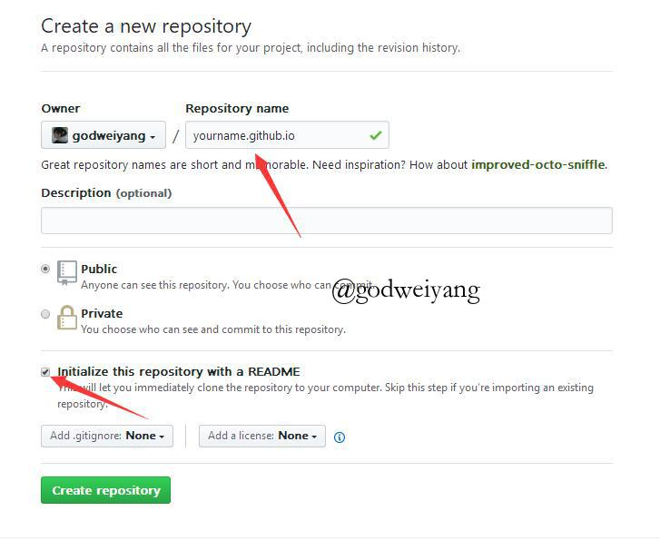
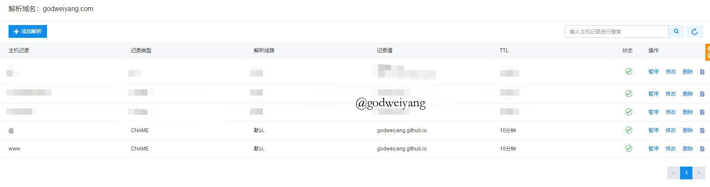

关注公众号【算法码上来】，每日算法干货马上就来！

关注我公众号：算法码上来，获取实时更新。有任何问题请加 QQ 技术交流群【群号：864832264】。如果觉得有用的话可以看心情打赏一杯奶茶，我会很开心哒。
我的博客源代码地址
大家可以直接素质二连，star&fork我的博客源代码：https://github.com/godweiyang/hexo-matery-modified，然后改改配置就可以写文章啦。
为了减小源码的体积，我将插件目录node_modules进行了压缩，大家下载完后需要解压。另外添加水印需要的字体文件我也删除了，大家可以直接从电脑自带的字体库中拷贝。
- 首先运行
git clone git@github.com:godweiyang/hexo-matery-modified.git将所有文件下载到本地。 - 解压
node_modules.zip，然后删除node_modules.zip和.git文件夹。 - 还缺一个字体（为图片添加水印需要用到），去
C:\Windows\Fonts下找到STSong Regular，复制到hexo-matery-modified文件夹下。
快速搭建
如果你不想自己从头开始慢慢自定义主题的话，可以直接下载我的修改好的主题，然后稍微修改几个地方就好了：
- 根目录配置文件
_config.yml和主题目录配置文件_config.yml中修改个人信息。 - 根目录配置文件中修改
deploy一栏的repository。 - 根目录配置文件中修改
baidu_url_submit一栏的token。 - 主题配置文件中修改
gitalk一栏，修改方法见正文。
当然前提是个性化设置章节之前的环境还是需要配置好！
平时常用命令：
hexo g # 生成博客网页文件
hexo s # 本地预览博客
hexo d # 上传网页文件到github前言
17年9月的时候开始搭建了第一个自己的独立博客，到现在也稍微像模像样了。很多小伙伴应该也想过搭建一个自己的博客，网上也有一堆详细教程。我在此稍稍总结一下具体的搭建步骤，另外网上很少有修改博客源码的个性化教程，我就稍稍分享一下我的一些修改经验，更多的个性化操作需要你自己以后去摸索。
具体效果可以参观我的博客：godweiyang.com，欢迎大家支持。
我不是一个前端程序员，有些东西不是很了解，写的有问题或有改进的地方请大家指出。
首先要了解一下我们搭建博客要用到的框架。Hexo是高效的静态站点生成框架，它基于Node.js。通过Hexo，你可以直接使用Markdown语法来撰写博客。相信很多小伙伴写工程都写过README.md文件吧，对，就是这个格式的！写完后只需两三条命令即可将生成的网页上传到你的github上，然后别人就可以看到你的网页啦。是不是很简单？你无需关心网页源代码的具体细节，你只需要用心写好你的博客内容就行。
目录结构
- 安装Node.js
- 添加国内镜像源
- 安装Git
- 注册Github账号
- 安装Hexo
- 连接Github与本地
- 写文章、发布文章
- 绑定域名
- 备份博客源文件
- 博客源代码下载
- 个性化设置（matery主题）
- 常见问题及解答（FAQ）
- 个性化设置（beantech主题，已停更）
安装Node.js
首先下载稳定版Node.js，我这里给的是64位的。
安装选项全部默认，一路点击Next。
最后安装好之后，按Win+R打开命令提示符，输入node -v和npm -v，如果出现版本号，那么就安装成功了。
添加国内镜像源
如果没有梯子的话，可以使用阿里的国内镜像进行加速。
npm config set registry https://registry.npm.taobao.org安装Git
为了把本地的网页文件上传到github上面去，我们需要用到分布式版本控制工具————Git[下载地址]。
安装选项还是全部默认，只不过最后一步添加路径时选择Use Git from the Windows Command Prompt，这样我们就可以直接在命令提示符里打开git了。
安装完成后在命令提示符中输入git --version验证是否安装成功。
注册Github账号
接下来就去注册一个github账号，用来存放我们的网站。大多数小伙伴应该都有了吧，作为一个合格的程序猿（媛）还是要有一个的。
打开https://github.com/，新建一个项目，如下所示：
然后如下图所示，输入自己的项目名字，后面一定要加.github.io后缀，README初始化也要勾上。名称一定要和你的github名字完全一样，比如你github名字叫abc，那么仓库名字一定要是abc.github.io。

然后项目就建成了，点击Settings，向下拉到最后有个GitHub Pages，点击Choose a theme选择一个主题。然后等一会儿，再回到GitHub Pages，会变成下面这样：
点击那个链接，就会出现自己的网页啦，效果如下：
安装Hexo
在合适的地方新建一个文件夹，用来存放自己的博客文件，比如我的博客文件都存放在D:\study\program\blog目录下。
在该目录下右键点击Git Bash Here，打开git的控制台窗口，以后我们所有的操作都在git控制台进行，就不要用Windows自带的控制台了。
定位到该目录下，输入npm i hexo-cli -g安装Hexo。会有几个报错，无视它就行。
安装完后输入hexo -v验证是否安装成功。
然后就要初始化我们的网站，输入hexo init初始化文件夹，接着输入npm install安装必备的组件。
这样本地的网站配置也弄好啦，输入hexo g生成静态网页，然后输入hexo s打开本地服务器，然后浏览器打开http://localhost:4000/，就可以看到我们的博客啦，效果如下：
按ctrl+c关闭本地服务器。
连接Github与本地
首先右键打开git bash，然后输入下面命令：
git config --global user.name "godweiyang"
git config --global user.email "792321264@qq.com"用户名和邮箱根据你注册github的信息自行修改。
然后生成密钥SSH key：
ssh-keygen -t rsa -C "792321264@qq.com"打开github，在头像下面点击settings，再点击SSH and GPG keys，新建一个SSH，名字随便。
git bash中输入
cat ~/.ssh/id_rsa.pub将输出的内容复制到框中，点击确定保存。
输入ssh -T git@github.com，如果如下图所示，出现你的用户名，那就成功了。
打开博客根目录下的_config.yml文件，这是博客的配置文件，在这里你可以修改与博客相关的各种信息。
修改最后一行的配置：
deploy:
type: git
repository: https://github.com/godweiyang/godweiyang.github.io
branch: masterrepository修改为你自己的github项目地址。
写文章、发布文章
首先在博客根目录下右键打开git bash，安装一个扩展npm i hexo-deployer-git。
然后输入hexo new post "article title"，新建一篇文章。
然后打开D:\study\program\blog\source\_posts的目录，可以发现下面多了一个文件夹和一个.md文件，一个用来存放你的图片等数据，另一个就是你的文章文件啦。
编写完markdown文件后，根目录下输入hexo g生成静态网页，然后输入hexo s可以本地预览效果，最后输入hexo d上传到github上。这时打开你的github.io主页就能看到发布的文章啦。
绑定域名
现在默认的域名还是xxx.github.io，是不是很没有牌面？想不想也像我一样弄一个专属域名呢，首先你得购买一个域名，xx云都能买，看你个人喜好了。
以我的百度云为例，如下图所示，添加两条解析记录：

然后打开你的github博客项目，点击settings，拉到下面Custom domain处，填上你自己的域名，保存：
这时候你的项目根目录应该会出现一个名为CNAME的文件了。如果没有的话，打开你本地博客/source目录，我的是D:\study\program\blog\source，新建CNAME文件，注意没有后缀。然后在里面写上你的域名，保存。最后运行hexo g、hexo d上传到github。
备份博客源文件
有时候我们想换一台电脑继续写博客，这时候就可以将博客目录下的所有源文件都上传到github上面。
首先在github博客仓库下新建一个分支hexo，然后git clone到本地，把.git文件夹拿出来，放在博客根目录下。
然后git checkout hexo切换到hexo分支，然后git add .，然后git commit -m "xxx"，最后git push origin hexo提交就行了。
当然我新建了一个仓库存放了源文件，具体效果可以看我的博客源文件仓库：https://github.com/godweiyang/hexo-matery-modified。大家也可以先用下文hexo安装方法安装完hexo，然后直接git clone git@github.com:godweiyang/hexo-matery-modified.git克隆我的所有源文件，然后这是我修改完的基本没bug的定制化的博客，就可以直接拿来用啦。
我这个源文件和原来的主题没有什么区别，只是我把插件都安装完了，有些小bug也修复了，所以拿来就能直接用，方便大家。
博客源代码下载
如果大家不想这么麻烦的装一堆东西，然后还要自己修改bug，那么只需要做好上面的准备工作，然后下载我的源代码，改改个人配置就行了。
源码地址：https://github.com/godweiyang/hexo-matery-modified。大家可以直接下载下来使用，修改个人配置信息即可，当然环境要先搭好。
如果大家下载好了源代码，就可以直接使用了，基本可以跳过文章后面的部分了！喜欢的记得star并fork哦！
个性化设置（matery主题）
下面的个性化设置主要针对的是matery主题，如果你想用我现在博客这个主题，可以直接看这个章节。
更换主题
这两天花时间将我的博客换了一个主题，现在这个主题看着更加的炫（zhuang）酷（bi），并且响应式更友好，点起来就很舒服，功能也多很多。
主题的原地址在这里：hexo-theme-matery，它的文档写得也非常的详细，还有中英文两个版本，作者回复也很及时。效果图如下，可以看出非常合我的口味：
但是我自己使用起来还是遇到了好几个问题，经过两天的不懈摸鱼，终于基本解决了，这里分享一下。
首先先按照文档教程安装一遍主题，然后是可以正常打开的，如果你是一般使用的话，基本没啥问题了。但是我是重度强迫症，一点小毛病就看着难受，下面列举一下我遇到的问题以及解决方法。
文章头设置
首先为了新建文章方便，建议将/scaffolds/post.md修改为如下代码：
---
title: {{ title }}
date: {{ date }}
top: false
cover: false
password:
toc: true
mathjax: true
summary:
tags:
categories:
---这样新建文章后不用你自己补充了，修改信息就行。
添加404页面
原来的主题没有404页面，加一个也不是什么难事。首先在/source/目录下新建一个404.md，内容如下：
---
title: 404
date: 2019-07-19 16:41:10
type: "404"
layout: "404"
description: "你来到了没有知识的荒原 :("
---然后在/themes/matery/layout/目录下新建一个404.ejs文件，内容如下：
<style type="text/css">
/* don't remove. */
.about-cover {
height: 75vh;
}
</style>
<div class="bg-cover pd-header about-cover">
<div class="container">
<div class="row">
<div class="col s10 offset-s1 m8 offset-m2 l8 offset-l2">
<div class="brand">
<div class="title center-align">
404
</div>
<div class="description center-align">
<%= page.description %>
</div>
</div>
</div>
</div>
</div>
</div>
<script>
// 每天切换 banner 图. Switch banner image every day.
$('.bg-cover').css('background-image', 'url(/medias/banner/' + new Date().getDay() + '.jpg)');
</script>“关于”页面增加简历（可选）
修改/themes/matery/layout/about.ejs，找到<div class="card">标签，然后找到它对应的</div>标签，接在后面新增一个card，语句如下：
<div class="card">
<div class="card-content">
<div class="card-content article-card-content">
<div class="title center-align" data-aos="zoom-in-up">
<i class="fa fa-address-book"></i> <%- __('myCV') %>
</div>
<div id="articleContent" data-aos="fade-up">
<%- page.content %>
</div>
</div>
</div>
</div>这样就会多出一张card，然后可以在/source/about/index.md下面写上你的简历了，当然这里的位置随你自己设置，你也可以把简历作为第一个card。
解决mathjax与代码高亮的冲突
如果你按照教程安装了代码高亮插件hexo-prism-plugin，单独使用是没有问题的，但如果你又使用了mathjax，并且按照网上教程，安装kramed插件并修改了js文件里的正则表达式（为了解决markdown和mathjax的语法冲突），好了，那你的代码就无法高亮了。解决方法很简单，别用kramed插件了，还用原来自带的marked插件，直接改它的正则表达式就行了，改法如下：
打开D:\study\program\blog\node_modules\marked\lib\marked.jsescape:处替换成：
escape: /^\\([`*\[\]()#$+\-.!_>])/,em:处替换成：
em: /^\*((?:\*\*|[\s\S])+?)\*(?!\*)/,这时在文章里写数学公式基本没有问题了，但是要注意：
数学公式中如果出现了连续两个{，中间一定要加空格！
增加建站时间
修改/themes/matery/layout/_partial/footer.ejs文件，在最后加上
<script language=javascript>
function siteTime() {
window.setTimeout("siteTime()", 1000);
var seconds = 1000;
var minutes = seconds * 60;
var hours = minutes * 60;
var days = hours * 24;
var years = days * 365;
var today = new Date();
var todayYear = today.getFullYear();
var todayMonth = today.getMonth() + 1;
var todayDate = today.getDate();
var todayHour = today.getHours();
var todayMinute = today.getMinutes();
var todaySecond = today.getSeconds();
/* Date.UTC() -- 返回date对象距世界标准时间(UTC)1970年1月1日午夜之间的毫秒数(时间戳)
year - 作为date对象的年份，为4位年份值
month - 0-11之间的整数，做为date对象的月份
day - 1-31之间的整数，做为date对象的天数
hours - 0(午夜24点)-23之间的整数，做为date对象的小时数
minutes - 0-59之间的整数，做为date对象的分钟数
seconds - 0-59之间的整数，做为date对象的秒数
microseconds - 0-999之间的整数，做为date对象的毫秒数 */
var t1 = Date.UTC(2017, 09, 11, 00, 00, 00); //北京时间2018-2-13 00:00:00
var t2 = Date.UTC(todayYear, todayMonth, todayDate, todayHour, todayMinute, todaySecond);
var diff = t2 - t1;
var diffYears = Math.floor(diff / years);
var diffDays = Math.floor((diff / days) - diffYears * 365);
var diffHours = Math.floor((diff - (diffYears * 365 + diffDays) * days) / hours);
var diffMinutes = Math.floor((diff - (diffYears * 365 + diffDays) * days - diffHours * hours) / minutes);
var diffSeconds = Math.floor((diff - (diffYears * 365 + diffDays) * days - diffHours * hours - diffMinutes * minutes) / seconds);
document.getElementById("sitetime").innerHTML = "本站已运行 " +diffYears+" 年 "+diffDays + " 天 " + diffHours + " 小时 " + diffMinutes + " 分钟 " + diffSeconds + " 秒";
}/*因为建站时间还没有一年，就将之注释掉了。需要的可以取消*/
siteTime();
</script>然后在合适的地方（比如copyright声明后面）加上下面的代码就行了：
<span id="sitetime"></span>修改不蒜子初始化计数
因为不蒜子至今未开放注册，所以没办法在官网修改初始化，只能自己动手了。和上一条一样，在/themes/matery/layout/_partial/footer.ejs文件最后加上：
<script>
$(document).ready(function () {
var int = setInterval(fixCount, 50); // 50ms周期检测函数
var pvcountOffset = 80000; // 初始化首次数据
var uvcountOffset = 20000;
function fixCount() {
if (document.getElementById("busuanzi_container_site_pv").style.display != "none") {
$("#busuanzi_value_site_pv").html(parseInt($("#busuanzi_value_site_pv").html()) + pvcountOffset);
clearInterval(int);
}
if ($("#busuanzi_container_site_pv").css("display") != "none") {
$("#busuanzi_value_site_uv").html(parseInt($("#busuanzi_value_site_uv").html()) + uvcountOffset); // 加上初始数据
clearInterval(int); // 停止检测
}
}
});
</script>然后把上面几行有段代码：
<% if (theme.busuanziStatistics && theme.busuanziStatistics.totalTraffic) { %>
<span id="busuanzi_container_site_pv">
<i class="fa fa-heart-o"></i>
本站总访问量 <span id="busuanzi_value_site_pv" class="white-color"></span>
</span>
<% } %>
<% if (theme.busuanziStatistics && theme.busuanziStatistics.totalNumberOfvisitors) { %>
<span id="busuanzi_container_site_uv">
人次, 访客数 <span id="busuanzi_value_site_uv" class="white-color"></span> 人.
</span>
<% } %>修改为：
<% if (theme.busuanziStatistics && theme.busuanziStatistics.totalTraffic) { %>
<span id="busuanzi_container_site_pv" style='display:none'>
<i class="fa fa-heart-o"></i>
本站总访问量 <span id="busuanzi_value_site_pv" class="white-color"></span>
</span>
<% } %>
<% if (theme.busuanziStatistics && theme.busuanziStatistics.totalNumberOfvisitors) { %>
<span id="busuanzi_container_site_uv" style='display:none'>
人次, 访客数 <span id="busuanzi_value_site_uv" class="white-color"></span> 人.
</span>
<% } %>其实就是增加了两个style='display:none'而已。
添加动漫人物
其实三步就行了，不用像网上有些教程那么复杂。
第一步：
npm install --save hexo-helper-live2d第二步：
npm install live2d-widget-model-shizuku第三步：
在根目录配置文件中添加如下代码：
live2d:
enable: true
scriptFrom: local
pluginRootPath: live2dw/
pluginJsPath: lib/
pluginModelPath: assets/
tagMode: false
log: false
model:
use: live2d-widget-model-shizuku
display:
position: right
width: 150
height: 300
mobile:
show: true
react:
opacity: 0.7然后hexo g再hexo s就能预览出效果了，但是有个注意的地方，我发现这个动漫人物最好不要和不蒜子同时使用，不然不蒜子会显示不出来。
图片添加水印
为了防止别人抄袭你文章，可以把所有的图片都加上水印，方法很简单。
首先在博客根目录下新建一个watermark.py，代码如下：
# -*- coding: utf-8 -*-
import sys
import glob
from PIL import Image
from PIL import ImageDraw
from PIL import ImageFont
def watermark(post_name):
if post_name == 'all':
post_name = '*'
dir_name = 'source/_posts/' + post_name + '/*'
for files in glob.glob(dir_name):
im = Image.open(files)
if len(im.getbands()) < 3:
im = im.convert('RGB')
print(files)
font = ImageFont.truetype('STSONG.TTF', max(30, int(im.size[1] / 20)))
draw = ImageDraw.Draw(im)
draw.text((im.size[0] / 2, im.size[1] / 2),
u'@yourname', fill=(0, 0, 0), font=font)
im.save(files)
if __name__ == '__main__':
if len(sys.argv) == 2:
watermark(sys.argv[1])
else:
print('[usage] <input>')字体也放根目录下，自己找字体。然后每次写完一篇文章可以运行python3 watermark.py postname添加水印，如果第一次运行要给所有文章添加水印，可以运行python3 watermark.py all。
添加网易云音乐BGM
写文章的时候，想插入一段BGM怎么办？
首先打开网易云网页版，找到想听的歌曲，然后点击生成外链：
复制如下代码：
粘贴到文章里就行了，为了美观，设置一下居中，具体代码如下：
<div align="middle">这里粘贴刚刚复制的代码</div>添加评论插件
主题已经自带了gitalk插件了，所以你只需要去github官网配置好就行了。
首先打开github申请一个应用，要填四个东西：
Application name //应用名称，随便填
Homepage URL //填自己的博客地址
Application description //应用描述，随便填
Authorization callback URL //填自己的博客地址然后点击注册，会出现两个字符串Client ID和Client Secret，这个要复制出来。
然后去主题的配置文件_config.yml下修改gitalk那里：
gitalk:
enable: true
owner: 你的github用户名
repo: 你的github用户名.github.io
oauth:
clientId: 粘贴刚刚注册完显示的字符串
clientSecret: 粘贴刚刚注册完显示的字符串
admin: 你的github用户名以后写文章的时候，只要在文章页面登陆过github，就会自动创建评论框，记得每次写完文章后打开博客文章页面一下。
添加百度统计和谷歌统计代码
首先打开百度站长平台，然后点击添加网站，输入网址并选择领域。
接下来要验证网站所有权，有三种方式，推荐采用HTML标签验证，最简单，将代码复制出来。
打开themes/matery/layout/_partial/head.ejs，修改下面两行：
<meta name="baidu-site-verification" content="xxx" />
<meta name="google-site-verification" content="xxx" />其中content内容改成你自己刚刚复制出来的就行了。
修复代码块行号不显示bug
修改themes/matery/source/css/matery.css第95行左右的pre和code两段改为如下代码：
pre {
/* padding: 1.5rem !important; */
padding: 1.5rem 1.5rem 1.5rem 3.3rem !important;
margin: 1rem 0 !important;
background: #272822;
overflow: auto;
border-radius: 0.35rem;
tab-size: 4;
}
code {
padding: 1px 5px;
font-family: Inconsolata, Monaco, Consolas, 'Courier New', Courier, monospace;
/* font-size: 0.91rem; */
color: #e96900;
background-color: #f8f8f8;
border-radius: 2px;
}然后在根目录的_config.yml中设置prism_plugin.line_number为true。
优化文章url路径
有教程认为，将博客目录结构改为如下，就能减少层级，有利于搜索引擎的SEO。其实不然，网站内容的层级是按照从首页开始点击几次能到达你的文章来算的，所以你改不改都是两层就到达了，不在首页的也可以通过index-archives-post到达，跟文章url长度没有任何关系，所以如下操作作废，你想改也行，不改也行。但是建议已经建站一段时间的同学千万别改，不然会产生很多死链，并且评论issue全部会清空，很麻烦。
seo搜索引擎优化认为，网站的最佳结构是用户从首页点击三次就可以到达任何一个页面，但是我们使用hexo编译的站点打开文章的url是：sitename/year/mounth/day/title四层的结构，这样的url结构很不利于seo，爬虫就会经常爬不到我们的文章，于是，我们可以将url直接改成sitename/title的形式，并且title最好是用英文，在根目录的_config.yml文件下修改permalink如下：
# permalink: :year/:month/:day/:title/
permalink: :title/添加雪花特效
首先在themes/matery/source/libs/others下新建文件snow.js，并插入如下代码：
/*样式一*/
(function($){
$.fn.snow = function(options){
var $flake = $('<div id="snowbox" />').css({'position': 'absolute','z-index':'9999', 'top': '-50px'}).html('❄'),
documentHeight = $(document).height(),
documentWidth = $(document).width(),
defaults = {
minSize : 10,
maxSize : 20,
newOn : 1000,
flakeColor : "#AFDAEF" /* 此处可以定义雪花颜色，若要白色可以改为#FFFFFF */
},
options = $.extend({}, defaults, options);
var interval= setInterval( function(){
var startPositionLeft = Math.random() * documentWidth - 100,
startOpacity = 0.5 + Math.random(),
sizeFlake = options.minSize + Math.random() * options.maxSize,
endPositionTop = documentHeight - 200,
endPositionLeft = startPositionLeft - 500 + Math.random() * 500,
durationFall = documentHeight * 10 + Math.random() * 5000;
$flake.clone().appendTo('body').css({
left: startPositionLeft,
opacity: startOpacity,
'font-size': sizeFlake,
color: options.flakeColor
}).animate({
top: endPositionTop,
left: endPositionLeft,
opacity: 0.2
},durationFall,'linear',function(){
$(this).remove()
});
}, options.newOn);
};
})(jQuery);
$(function(){
$.fn.snow({
minSize: 5, /* 定义雪花最小尺寸 */
maxSize: 50,/* 定义雪花最大尺寸 */
newOn: 300 /* 定义密集程度，数字越小越密集 */
});
});
/*样式二*/
/* 控制下雪 */
function snowFall(snow) {
/* 可配置属性 */
snow = snow || {};
this.maxFlake = snow.maxFlake || 200; /* 最多片数 */
this.flakeSize = snow.flakeSize || 10; /* 雪花形状 */
this.fallSpeed = snow.fallSpeed || 1; /* 坠落速度 */
}
/* 兼容写法 */
requestAnimationFrame = window.requestAnimationFrame ||
window.mozRequestAnimationFrame ||
window.webkitRequestAnimationFrame ||
window.msRequestAnimationFrame ||
window.oRequestAnimationFrame ||
function(callback) { setTimeout(callback, 1000 / 60); };
cancelAnimationFrame = window.cancelAnimationFrame ||
window.mozCancelAnimationFrame ||
window.webkitCancelAnimationFrame ||
window.msCancelAnimationFrame ||
window.oCancelAnimationFrame;
/* 开始下雪 */
snowFall.prototype.start = function(){
/* 创建画布 */
snowCanvas.apply(this);
/* 创建雪花形状 */
createFlakes.apply(this);
/* 画雪 */
drawSnow.apply(this)
}
/* 创建画布 */
function snowCanvas() {
/* 添加Dom结点 */
var snowcanvas = document.createElement("canvas");
snowcanvas.id = "snowfall";
snowcanvas.width = window.innerWidth;
snowcanvas.height = document.body.clientHeight;
snowcanvas.setAttribute("style", "position:absolute; top: 0; left: 0; z-index: 1; pointer-events: none;");
document.getElementsByTagName("body")[0].appendChild(snowcanvas);
this.canvas = snowcanvas;
this.ctx = snowcanvas.getContext("2d");
/* 窗口大小改变的处理 */
window.onresize = function() {
snowcanvas.width = window.innerWidth;
/* snowcanvas.height = window.innerHeight */
}
}
/* 雪运动对象 */
function flakeMove(canvasWidth, canvasHeight, flakeSize, fallSpeed) {
this.x = Math.floor(Math.random() * canvasWidth); /* x坐标 */
this.y = Math.floor(Math.random() * canvasHeight); /* y坐标 */
this.size = Math.random() * flakeSize + 2; /* 形状 */
this.maxSize = flakeSize; /* 最大形状 */
this.speed = Math.random() * 1 + fallSpeed; /* 坠落速度 */
this.fallSpeed = fallSpeed; /* 坠落速度 */
this.velY = this.speed; /* Y方向速度 */
this.velX = 0; /* X方向速度 */
this.stepSize = Math.random() / 30; /* 步长 */
this.step = 0 /* 步数 */
}
flakeMove.prototype.update = function() {
var x = this.x,
y = this.y;
/* 左右摆动(余弦) */
this.velX *= 0.98;
if (this.velY <= this.speed) {
this.velY = this.speed
}
this.velX += Math.cos(this.step += .05) * this.stepSize;
this.y += this.velY;
this.x += this.velX;
/* 飞出边界的处理 */
if (this.x >= canvas.width || this.x <= 0 || this.y >= canvas.height || this.y <= 0) {
this.reset(canvas.width, canvas.height)
}
};
/* 飞出边界-放置最顶端继续坠落 */
flakeMove.prototype.reset = function(width, height) {
this.x = Math.floor(Math.random() * width);
this.y = 0;
this.size = Math.random() * this.maxSize + 2;
this.speed = Math.random() * 1 + this.fallSpeed;
this.velY = this.speed;
this.velX = 0;
};
// 渲染雪花-随机形状（此处可修改雪花颜色！！！）
flakeMove.prototype.render = function(ctx) {
var snowFlake = ctx.createRadialGradient(this.x, this.y, 0, this.x, this.y, this.size);
snowFlake.addColorStop(0, "rgba(255, 255, 255, 0.9)"); /* 此处是雪花颜色，默认是白色 */
snowFlake.addColorStop(.5, "rgba(255, 255, 255, 0.5)"); /* 若要改为其他颜色，请自行查 */
snowFlake.addColorStop(1, "rgba(255, 255, 255, 0)"); /* 找16进制的RGB 颜色代码。 */
ctx.save();
ctx.fillStyle = snowFlake;
ctx.beginPath();
ctx.arc(this.x, this.y, this.size, 0, Math.PI * 2);
ctx.fill();
ctx.restore();
};
/* 创建雪花-定义形状 */
function createFlakes() {
var maxFlake = this.maxFlake,
flakes = this.flakes = [],
canvas = this.canvas;
for (var i = 0; i < maxFlake; i++) {
flakes.push(new flakeMove(canvas.width, canvas.height, this.flakeSize, this.fallSpeed))
}
}
/* 画雪 */
function drawSnow() {
var maxFlake = this.maxFlake,
flakes = this.flakes;
ctx = this.ctx, canvas = this.canvas, that = this;
/* 清空雪花 */
ctx.clearRect(0, 0, canvas.width, canvas.height);
for (var e = 0; e < maxFlake; e++) {
flakes[e].update();
flakes[e].render(ctx);
}
/* 一帧一帧的画 */
this.loop = requestAnimationFrame(function() {
drawSnow.apply(that);
});
}
/* 调用及控制方法 */
var snow = new snowFall({maxFlake:60});
snow.start();然后在主题配置文件里libs.js里添加一行snow: /libs/others/snow.js。
在themes/matery/layout/layout.ejs里添加如下代码：
<!-- 雪花特效 -->
<% if (theme.snow.enable) { %>
<script type="text/javascript" src="<%- theme.libs.js.snow %>"></script>
<% } %>最后在主题配置文件最后添加：
# 雪花特效
snow:
enable: true这个特效和动漫一样，有点花里胡哨，并且可能会造成卡顿，所以我并没有开启，还是给大家一个最干净的阅读体验吧。
动态标签栏
在theme/matery/layout/layout.ejs下添加如下代码：
<script type="text/javascript"> var OriginTitile = document.title, st; document.addEventListener("visibilitychange", function () { document.hidden ? (document.title = "Σ(っ °Д °;)っ喔哟，崩溃啦！", clearTimeout(st)) : (document.title = "φ(゜▽゜*)♪咦，又好了！", st = setTimeout(function () { document.title = OriginTitile }, 3e3)) })
</script>常见问题及解答（FAQ）
这个章节主要更新许多同学在搭建博客的过程中咨询我的一些问题。
为什么本地生成完ssh key之后没有.ssh文件夹？
这是我没有想到会遇到的问题，但是很多人还是遇到了，主要问题就是在输入完ssh-keygen -t rsa -C "792321264@qq.com"之后，很多同学没有按照提示继续输入，而是就这么结束了，然后报错了也没有发现。正确做法是按照提示，一路按回车就行了。
为什么代码块显示有问题？
代码要显示正确，要注意以下几个点：
- 根目录
_config.yml文件下的highlight中的line_number要设置为false，因为行号有bug，当然如果你按照上面教程修复了bug，就可以改成true。 - 不要按照网上教程安装
kramed插件，已经装了的卸载掉。 - 修改
node_modules/marked/lib/marked.js文件中的escape和em两行（在538行左右），改成下面：escape: /^\\([`*\[\]()#$+\-.!_>])/, em: /^\*((?:\*\*|[\s\S])+?)\*(?!\*)/,
为什么博客本地预览没问题，push到github上就显示不正常？
这个问题可能原因有很多，我暂时列举遇到的情况：
- github博客的仓库名称一定要和你的github名字完全一样，比如你github名字叫
abc，那么仓库名字一定要是abc.github.io。这是大多数人会犯的错误，会导致显示不正常。
更换主题之后，配置文件是修改根目录下的还是主题目录下的？
这个其实都要修改，一般也不会出现重复的属性。具体使用哪个，要看主题的源代码，如果是config.xxx那就是用的根目录配置文件，如果是theme.xxx那就用的是主题目录的配置文件。
在哪建立github分支？
点击仓库的settings-branches，右边点击add new branch即可。
个性化设置（beantech主题，已停更）
下面的个性化设置主要针对的是我之前使用的beantech主题，当然如果你想用我现在博客这个主题，可以不看这部分。这部分已经停止更新，今后我只会更新matery主题的各种配置。
更换主题
网上大多数主题都是github排名第一的Next主题，但是我个人不是很喜欢，我更喜欢beantech主题，地址在传送门。
首先要注意的是，这个github项目不仅包含了主题文件，还包含了hexo的各种文件。
所以首先下载下来这个项目，然后推荐将下图所有文件全部替换你原本博客根目录下的文件：
当然一般的主题和这个主题有点不一样，只含有主题文件夹，所以把整个文件夹丢到theme下就行了。
然后运行hexo clean清空所有生成的网页缓存，hexo g、hexo d。这时候新的主题网页就生成好了，博客根目录的情况应该大致如下：
博客目录构成介绍
从上图可以看出，博客的目录结构如下：
- node_modules
- public
- scaffolds
- source
- _posts
- about
- archive
- img
- tags
- themesnode_modules是node.js各种库的目录，public是生成的网页文件目录，scaffolds里面就三个文件，存储着新文章和新页面的初始设置，source是我们最常用到的一个目录，里面存放着文章、各类页面、图像等文件，themes存放着主题文件，一般也用不到。
我们平时写文章只需要关注source/_posts这个文件夹就行了。
网站图片都保存在D:\study\program\blog\source\img目录下，可以修改成自己的图片。
修复文档分类bug
这个主题文档分类功能有个bug，一直没有得到解决，直到最近，我才发现是源文件的单词拼错了。。。
打开D:\study\program\blog\scaffolds\post.md，单词catagories改为categories。
添加畅言评论插件
主题自带了多说评论插件，但是多说已经关闭了，所以我换成了畅言评论插件。
首先你得注册一个畅言账号，地址。
然后打开如下页面，复制该段代码：
打开D:\study\program\blog\themes\beantech\layout\post.ejs，将代码粘贴到如下位置：
然后重新生成一下网页，可以看到效果图如下：
更多插件例如热评话题之类的，可以自行在畅言后台找到代码添加。
添加图片放大功能
首先下载zooming.js文件地址，保存在D:\study\program\blog\themes\beantech\source\js目录下。
打开D:\study\program\blog\themes\beantech\layout\post.ejs，在最下方粘贴如下代码：
<script type="text/javascript" src="/js/zooming.js"></script>然后文章里的图片就可以单击全屏啦。
添加数学公式显示
打开D:\study\program\blog\themes\beantech\layout\post.ejs，在最下方粘贴如下代码：
<script type="text/javascript" src="http://cdn.mathjax.org/mathjax/latest/MathJax.js?config=default"></script>由于markdown语法与mathjax语法存在冲突，所以还需要修改源文件。
打开D:\study\program\blog\node_modules\marked\lib\marked.jsescape:处替换成：
escape: /^$[`*\[\]()#$+\-.!_>])/em:处替换成：
em: /^\*((?:\*\*|[\s\S])+?)\*(?!\*)/这时在文章里写数学公式基本没有问题了，但是要注意：
数学公式中如果出现了连续两个{，中间一定要加空格！
举个例子:
行内公式：$y = f(x)$
代码：
$y = f(x)$行间公式：
\[y = {f_{ {g_1}}}(x)\]
代码：
\\[y = {f_{ {g_1}}}(x)\\]注意上面花括号之间有空格！
添加留言板
在D:\study\program\blog\themes\beantech\layout中新建bbs.ejs，文件内容如下：
---
layout: page
---
<style type="text/css">
header.intro-header{
background-position: right;
}
</style>
<!-- Chinese Version -->
<div class="zh post-container">
<%- page.content %>
</div>然后在D:\study\program\blog\source中新建\bbs文件夹，里面在新建index.md文件，内容如下：
---
layout: "bbs"
title: "BBS"
date: 2017-09-19 12:48:33
description: "欢迎交换友链，一起交流学习！"
header-img: "img/header_img/home-bg-2-dark.png"
comments: true
---
此处替换为你的畅言评论代码~~~添加置顶功能
运行如下两条命令安装置顶插件：
npm uninstall hexo-generator-index --save
npm install hexo-generator-index-pin-top --save然后打开D:\study\program\blog\themes\beantech\layout\index.ejs，在如下位置添加代码：
<% if (post.top) {%>
<i class="fa fa-thumb-tack"></i>
<font color="7D26CD">置顶</font>
<span class="post-meta-divider">|</span>
<%}%>< code></%}%><>然后在你想置顶的文章md文件里，添加如下配置选项：
top: true添加访客人数统计和字数统计
我们使用一个国外的流量统计网站：gostats.com，首先注册一下。
然后自己添加网站地址，过程就不详细说了，然后点击Get counter code，选择一个自己喜欢的风格。
如下图所示，选择一个样式，选择HTML，生成代码：
复制这段代码到D:\study\program\blog\themes\beantech\layout\_partial\footer.ejs，具体位置如下：
默认的代码和我图中不一样，因为我不想点击图片跳转到它统计网站的链接，可以模仿我的自行修改。
字数统计首先安装插件
npm i --save hexo-wordcount然后打开D:\study\program\blog\themes\beantech\layout\_partial\footer.ejs，添加如下代码：
<span class="post-count"><%= totalcount(site) %> words altogether</span>具体位置见上图。
文章属性配置
首先解释一下文章开头的属性配置，如下图所示：
title: 文章标题
catalog: 是否显示段落目录
date: 文章日期
subtitle: 子标题
header-img: 顶部背景图片
top: 是否置顶
tags: 标签
categories: 分类每次写文章修改每个值就行了。